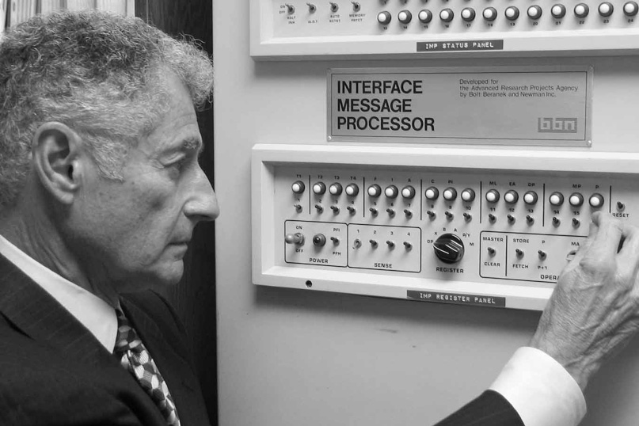

ARPANET: A Rede que Deu Origem à Internet
Criada nos anos 60, a ARPANET foi a primeira rede de computadores da história. Ela conectou universidades e centros militares muito antes da palavra “internet” existir.
O que foi a ARPANET?
A ARPANET foi um projeto criado pela ARPA (atual DARPA), uma agência de pesquisa do Departamento de Defesa dos Estados Unidos. Seu objetivo inicial era permitir comunicação entre computadores localizados em diferentes universidades e centros de pesquisa.
Ela ficou conhecida como a primeira rede de comutação de pacotes do mundo, um conceito revolucionário para a época. Em vez de enviar informações em um fluxo contínuo, a ARPANET dividia os dados em pequenos pacotes independentes, o que tornava a comunicação mais rápida e mais resistente a falhas.

Como a ARPANET funcionava?
A ARPANET utilizava computadores chamados IMP (Interface Message Processors), que funcionavam como roteadores primitivos. Esses aparelhos interligavam as máquinas participantes e garantiam que os pacotes de dados chegassem ao destino correto.
O sistema era considerado extremamente avançado. Era possível enviar mensagens, compartilhar arquivos e até acessar computadores remotos — tudo isso décadas antes da criação dos navegadores modernos.
A primeira mensagem enviada
A primeira mensagem transmitida pela ARPANET aconteceu em 29 de outubro de 1969. Um computador da UCLA tentava enviar a palavra “LOGIN” para um computador em Stanford. Mas o sistema caiu no meio do processo, O que foi transmitido? “LO”.
Esse pequeno erro acabou marcando a história: foi o primeiro registro oficial de comunicação em rede entre dois computadores distantes.
A evolução até a internet moderna
Durante os anos 70 e 80, a ARPANET cresceu e se tornou o laboratório perfeito para o desenvolvimento de novos protocolos. O mais importante deles foi o TCP/IP, criado por Vint Cerf e Robert Kahn.
Em 1º de janeiro de 1983, toda a ARPANET migrou oficialmente para o TCP/IP — e esse dia é considerado o aniversário da internet como a conhecemos.
A ARPANET foi desativada em 1990, mas seu legado permanece vivo em todas as tecnologias de rede atuais.